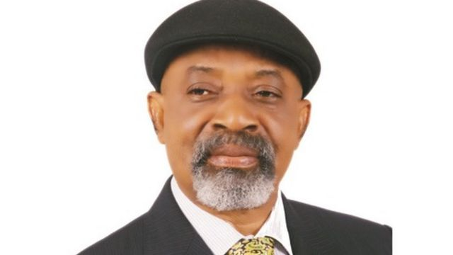

Tribute to Dr. Chris Ngige

from google images:
chrisngigepictures
"Great Indian scientist and politician, who
played a leading role in the
development of India's missile and nuclear weapons
programs"
Achievements of Dr. Chris Ngige
- Member, Vision 2010 sub-committee on health
-
Recipient of Nigeria’s National Honours of Officer of the Order of
the Niger (OON),
-
Foundation Member of PDP, National Level, 1998
-
Member, Ohanaeze Council of Elders and member strategic committee,
1992-1997
-
Co-Convener Nkpoko Igbo,
pre-constitutional conference seminar in Enugu, 1995
- President, Aka-Ikenga, 1992-1997
-
Ad hoc lecturer on Budget/contract procedures to the Administrative
Staff College of Nigeria (ASCON) Badagary Chief Medical Directors’
Course in 1996
-
Foundation Sole Administration, Aka-Ikenga, Lagos,
1988-1990
-
Member, Nigeria G 15-Economic Cooperation Council
1990
-
Special Adviser and Member, Igwe Alor In-Council, 1990–present
chrisngigebiography